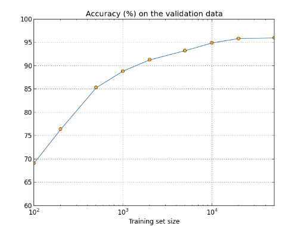

Improving the way neural networks learn
This markdown file contains my notes on Chapter 3 of the book Neural Networks and Deep Learning. This chapter will introduce many techniques to improve the network learning including:
- Cross Entropy cost function
- Softmax on the output layer
- 4 Regularisation methods
- L1 / L2 regularisation
- dropout
- artificial expansion of the training data
- Weight Initialisation
- Heuristics for tuning Hyperparameters
- Variations of Gradient Descent
- Other activation funcitons: Tanh, ReLu
The cross-entropy cost function
Motivation: As seen in Chap 2, a neuron learns very slowly if the activation function is saturated (i.e. \(z\) is at an extreme such that the gradient \(\sigma'(z)\) is too small to cause any substantial change in the update step). Consider the weights in the final layer:
\[ \begin{align*} \frac{\partial C_{MSE}}{\partial w^L} &= \delta^L {a^{L-1}}^T \\ &= (a^L - y) \odot \sigma'(z^L) {a^{L-1}}^T \\ & \propto \sigma'(z^L) \end{align*} \]
Cross-Entropy loss resolves this by removing the dependency on the gradient of the sigmoid activation function. The CE loss function \(C_{CE}\) is given by:
\[ \begin{align*} C_{CE} &= \frac{1}{n} \sum_x C_{CE,x} \\ \text{where:}\\ C_{CE,x} &= - \sum_j \left[y_j \ln a_j^L + (1 - y_j) \ln(1 - a_j^L) \right] \\ &= -y \cdot \ln (a^L) - (1 - y) \cdot \ln (1 - a^L) \end{align*} \]
To find the gradient wrt to a weight
\[ \begin{align*} \frac{\partial C_{CE,x}}{\partial w^L} &= \frac{\partial z^L}{\partial w^L} \frac{\partial a^L}{\partial z^L} \frac{\partial C_{CE,x}}{\partial a^L} \\ \text{Note } a^L = \sigma (z^L) \\ &= ({a^{L-1}}^T \otimes I ) \ \sigma'(z^L) \cdot \left[ -y \cdot \frac{1}{\sigma (z^L)} +(1 - y) \cdot \frac{1}{(1 - \sigma(z^L))}\right] \\ &= ({a^{L-1}}^T \otimes I ) \ \sigma'(z^L) \cdot \left[ \frac{\sigma(z^L) - y}{\sigma(z^L)(1 - \sigma(z^L))}\right] \\ \text{Note } \sigma' = \sigma(1 - \sigma) \\ &= \left({a^{L-1}}^T \otimes I \right) \cdot \left( \sigma(z^L) - y \right) \\ &= \left( \sigma(z^L) - y \right) {a^{L-1}}^T \\ \end{align*} \]
i.e. the gradient is proprtional to the error - this makes much more sense, because now the network will learn quicker if the error is larger (which is much more human like as well). (Note: vector-matrix derivative and Kronecher product, though the last line is dubious.)
Exercises
The right form of cross-entropy
Consider the incorrect form; \(- [a \ln y + (1 - a) \ln (1 - y)]\). In a classification problem, \(y \in \{0,1\}\) and in either case, the cost will be very large and positive: \(+\inf \times \{a, 1-a\}\).
Regression problems
In regression problems, \(y \in [0,1]\). The cross entropy will still be minimised when \(a(z) = y\) by Gibb’s inequality.
Using the quadratic cost when we have linear neurons in the output layer
Then we have:
\[ \begin{align*} \frac{\partial C_{MSE,x}}{\partial w^L} &= \delta^L {a^{L-1}}^T \\ &= (a^L - y) {a^{L-1}}^T \\ \end{align*} \]
This resolves the saturation issue in the final layer, however the issue still remains in the previous layers.
What does the cross-entropy mean? Where does it come from?
Working backwards, we can derive the CE loss by supposing that we want to satisfy this differential equation for the bias:
\[ \begin{align*} \frac{\partial C}{\partial b} &= (a - y) \\ \text{Using the chain rule} \\ &= \frac{\partial z}{\partial b} \frac{\partial a}{\partial z} \frac{\partial C}{\partial a} \\ &= I \Sigma'(z) \frac{\partial C}{\partial a} \\ &= \frac{\partial C}{\partial a} \odot \sigma'(z) = \frac{\partial C}{\partial a} \odot a(1 - a) \\ \text{Equating the two} \\ (a - y) &= \frac{\partial C}{\partial a} \odot \sigma'(z) \\ \text{Abusing division notation..} \\ \frac{\partial C}{\partial a} &= \frac{a - y}{a(1 - a)} \\ \implies C &= -\left[y \cdot \ln (a) + (1 - y) \cdot \ln (1 - a) \right] + \text{const} \\ &&\text{as required} \\ \end{align*} \]
Another factor that may inhibit learning is the presence of the \(x_j\) term in Equation (61). Because of this term, when an input \(x_j\) is near to zero, the corresponding weight \(w_j\) will learn slowly.
- In the final layer of a multi-layer NN, \(x_j = a_j^{L-1}\) (i.e. the activation of the neurons in the previous layer).
- Equation 61 refers to: \(\frac{\partial C}{\partial w^L} = \delta^L {a^{L-1}}^T\)
It is not possible to elimnate this term through a clever choice of cost function because of the weighted input equation: \(z = w \cdot a + b\). Because of the linearity in the derivative operator, \(a\) will always appear as a factor when differentiating wrt \(w\).
Softmax
Instead of using sigmoid as the activation function in the output layer, we can use softmax:
\[ a_j^L = \text{softmax}(z, j) = \frac{\exp(z_j^L)}{\sum_k \exp(z_k^L)} \]
- This can be interpreted as a probability distribution because it obeys the two laws:
- \(a_j^L > 0\) because \(\exp(z) > 0\)
- \(\sum_j a_j^L = \sum_j \frac{\exp(z_j^L)}{\sum_k \exp(z_k^L)} = \frac{\sum_j \exp(z_j^L)}{\sum_k \exp(z_k^L)} = 1\)
Note: It is obvious that the output of a sigmoid layer will not form a probability distribution, because the outputs aren’t rescaled.
The associated cost function is the log-likelihood function:
\[ C_{LL,x} = -\ln (y^T a^L) \equiv - y^T \ln (a^L) \]
where \(y\) is the one-hot encoded class for the corresponing input \(x\).
Exercise
Monoticity of softmax
Consider the derivative of the softmax function wrt an input:
\[ \begin{align*} \frac{\partial a_j^L}{\partial z_k^L} &= \frac{\partial}{\partial z_k^L} \left\{ \exp(z_j^L) \left(\sum_i \exp(z_i^L)\right)^{-1} \right\} \\ %%% Consider j not equal to k \text{for } j \ne k \\ &= - \exp(z_j^L) \exp(z_k^L) \left(\sum_i \exp(z_i^L)\right)^{-2} \\ &= - a_j^L (1 - a_k^L)\\ & < 0 \\ %%% Consider j=k \text{for } j = k \\ &= \exp(z_j^L) \left(\sum_i \exp(z_i^L)\right)^{-1} - \exp(2z_j^L) \left(\sum_i \exp(z_i^L)\right)^{-2} \\ &= a_j^L - {a_j^L}^2 = a_j^L (1 - a_j^L) \\ &= \exp(z_j^L) \left( \sum_{i \ne j} \exp(z_i^L) \right) \left(\sum_i \exp(z_i^L)\right)^{-2} \\ % &> 0 \end{align*} \]
Hence, increasing \(z_k^L\) is guaranteed to increase the corresponding output activation \(a_k^L\) while decreasing the others.
Non-locality of softmax
A consequence of the denominator of the softmax function is that the output depends on all the weighted inputs (unlike the sigmoid).
Inverting the softmax layer
To find the weighted input \(z_j^L\) given the output activations \(\vec{a}_L\):
\[ \begin{align*} a_j^L &= \frac{\exp(z_j^L)}{\sum_k \exp(z_k^L)} \\ \iff z_j^L &= \ln(a_j^L) - \ln \left(\sum_k \exp(z_k^L)\right) \\ &= \ln(a_j^L) + C \ \text{, for some constant } C \end{align*} \]
Avoiding learning slowdown
Consider the derivative of the cost function wrt the weights:
\[ \begin{align*} \frac{\partial C_{LL,x}}{\partial w^L} &= \frac{\partial z^L}{\partial w^L} \frac{\partial a^L}{\partial z^L} \frac{\partial C}{\partial a^L} \\ &= ({a^{L-1}}^T \otimes I) \frac{\partial a^L}{\partial z^L} \cdot - \frac{1}{a^L} \cdot y \\ &= \begin{cases} ({a^{L-1}}^T \otimes I) \end{cases} \end{align*} \]
TODO above..
Where does the “softmax” name come from?
Consider:
\[ \begin{align*} &\lim_{c \to \inf} \frac{\exp cz_j}{\sum_k \exp c z_k} \\ = &\lim_{c \to \inf} \left(1 + \sum_{k \forall k \ne j} \exp c(z_k - z_j) \right)^{-1} \\ \to & \begin{cases} 0 & \text{if } z_j < z_k \forall k \\ 1 & \text{if } z_j > z_k \forall k \\ \frac{1}{m} & \text{if } z_j = z_i \forall k : |k| = m \end{cases} \end{align*} \]
This is equivalent to the argmax function (if there are no \(z_k = z_j\)).
Backpropagation with softmax and the log-likelihood cost
To find an expression for \(\delta^L = \frac{\partial C}{\partial z^L}\):
\[ \begin{align*} \delta^L &= \frac{\partial C}{\partial z^L} \\ &= \frac{\partial a^L}{\partial z^L} \frac{\partial C}{\partial a^L} \\ &= \frac{\partial a^L}{\partial z^L} \cdot - \frac{1}{a_L} \odot y \\ \text{Note } y_j = 1 \\ &= \begin{cases} a_j^L - 1 & \text{if } k = j \\ 1 - a_k^L & \text{otherwise}\\ \end{cases} \end{align*} \]
Slightly confused by the textbook.
Overfitting and regularization
- early stopping is used to stop training when the classification accuracy of the validation set plateus.
- hold out method is when a validation set is used to tune the hyperparameters of the model.
- Use more training data to prevent overfitting
Regularization
weight decay or L2 regularization
\[ C = C_0 +\frac{\lambda}{2n} \sum_w w^2 \]
where \(\lambda\) is the regularization parameter - larger \(\lambda\) means larger weights will be penalised more. This leads to the following weight update equation:
\[ \begin{align*} \text{Gradient descent:}\\ w &\to \left(1 - \frac{\eta \lambda}{n} \right) w - \eta \frac{\partial C_0}{\partial w} \\ \text{SGD:} \\ w &\to \left(1 - \frac{\eta \lambda}{n} \right) w - \frac{\eta}{m} \sum_m \frac{\partial C_{0,x}}{\partial w} \\ \end{align*} \]
Hence, on each update, the weight is rescaled to be smaller, unless this is a detriment to the unregularized cost function. Note in SGD, the weight decay has the same factor of \(1/n\), but the unregularized cost function is averaged as normal.
- Note that the update equation for the biases doesn’t change, because the regularization term doesn’t include the biases! Whether or not to incldue biases is dependent on the network. Genereally it doesn’t affect the accuracy so much, however large biases can lead to saturation which may be desirable in some cases.
- Note that when the training examples increases, the regularization patameter must be increased as well to keep \(\frac{\eta \lambda}{n}\) the same
- Without regularization, SGD can easily be stuck in a local minima. Intuitively, this can be because when the weight vectors are large, small changes to them will still point them in a similar direction to before - i.e. not all directions will be explored in the cost function landscape. Hence, regularization resolves this by keeping the weight vectors small, so that small changes will cause larger changes in direction, resulting in SGD not being stuck in local minima so often.
L1 Regularization
\[ C = C_0 + \frac{\lambda}{n} \sum_w |w| \]
This gives the update equation:
\[ w \to w' = w - \frac{\eta \lambda}{n} \text{sgn}(w) - \eta \frac{\partial C_0}{\partial w} \]
Comparing this to L2 regularization, the differences are:
- When the weights are large, L2 will penalise more
- When the weights are small, L1 will drive them to 0
This gives the effect that L1 regularization will tend to have a relatively small number of high-importnace connections, while the other weigths are driven to 0.
Dropout
During the training procedure, we add extra steps:
- deactivate out half of the neurons in the hidden layer
- perform fwd and backprop
- reintroduce the neurons and repeat
After training, all the nerons are kept active, but the weights in the connected layer are halved (because previously it was learning on only half as many neurons).
Heuristically, this works because dropout is analogous to ensembling multiple NNs. Another explanation is:
“This technique reduces complex co-adaptations of neurons, since a neuron cannot rely on the presence of particular other neurons. It is, therefore, forced to learn more robust features that are useful in conjunction with many different random subsets of the other neurons.”
Artificially increasing the training set

This graph shows that as the training set size increases, the accuracy increases. However gathering more data can be expensive. Instead, artificially increasing the training set size can make vast improvements:
- Rotating the images by some amount (if arbitrarily large rotations are allowed, then a 6 may look like a 9!)
- “elastic distortions” aim to mimic the variance added by real human handwriting
Note, the converse is also true: reducing the noise in the training data can be more beneficial in e.g. signal processing tasks such as speech recognition.
Key takeaway: Improving training data is just as important as improving the algorithms.
Problem
How do our machine learning algorithms perform in the limit of very large data sets?
Tbh, I’m not sure what is the correct extrapolation. Currently, LLMs continue to improve with more data. At some point, the data will be large enought that it encompasses all possibilties, hence the accuracy should reach 100% asymptotically (perhaps only asmyptotically, because one could construct an example that catches out the model?)
Weight initialization
Motivation: Consider intialising the weights and biases: \(w,b \sim \mathcal{N}(\mu=0, \sigma^2=1)\). Immediately after initialisation, the weighted input to neurons to any layer \(z^l = w^l \cdot a^{l-1} + b^l\), so \(z\) will be the sum of Guassians which is also Guassian: \(z^l \sim \mathcal{N}(\mu=0, \sigma^2=n + 1)\), where \(n\) is the number of non-zero activations in the previous layer (the \(+1\) comes from the bias). Hence, \(z^l\) has very large variance, which will make it more likely for that neuron to saturate and learn more slowly.
A better intialisation scheme is to set the variance of the weights: \(w \sim \mathcal{N}(0, 1/n_\text{in})\).
Interestingly, the initialisation of the bias doesn’t matter so much (as long as it doesn’t cause early saturation).
Note: weight initialisation improves the rate of convergence to an optimal set of weights and biases; however, it doesn’t necessarly improve the accuracy of the model. (in Chap 4, better initialisations do actually enable a other methods to improve the performance).
Connecting regularization and the improved method of weight initialzation
Recall: Weight update in stochastic gradient descent
\[ w \to w' = \left(1 - \frac{\eta \lambda}{n} \right) w - \frac{\eta}{m} \sum_m \frac{\partial C_{0,x}}{\partial w} \\ \]
Suppose we are using the original approach to weight initialization. A wavy argument can be formulated to show that L2 regularization leads to the improved initialization scheme:
- In the first few epochs, \(\frac{\partial C}{\partial w}\) will be small because the neurons are saturated. Hence, assuming \(\lambda\) is large enough, the weight update equation simplifies to:
\[ \begin{align*} \text{Per SGD update:} \\ w \to w'& = \left(1 - \frac{\eta \lambda}{n} \right) w \\ \text{Per epoch:} \\ w \to w'& = \left(1 - \frac{\eta \lambda / m}{n/m} \right)^{\frac{n}{m}} w \end{align*} \]
- For \(n/m \gg \eta \lambda / m\), the weight decay per epoch simplifies to: \(w' = \exp - (\eta \lambda / m)\).
- (?? Not sure about this step) Supposing \(\lambda\) is not too large, weight decays will tail off when the \(|w| \sim 1/\sqrt{n}\)
How to choose a neural network’s hyper-parameters?
It can be overwhelming to choos hyperparemeters, because you don’t know where to start.
Baseline
As a baseline, aim to get any non-trivial learning by performing better than chance. The idea is to meaningfully reduce the problem so that you can feedback quick enough for you to iterate.
- Reduce the training set classes (e.g. 0s and 1s only)
- Speeds up training significantly
- This can be useful for debugging as well
- Note that changing the size of training set will require modification to the relevant hyper-parameters
- Reduce validation set size to speed up evaluation
- Start off with no hidden layer
Choosing hyperparemeters
- Pick the learning rate \(\eta\) by monitoring the training cost.
- Use early stopping to determine the number of epochs
- However, in the early stages, don’t use early stopping, because increased epochs can help monitor regularization performance
- A good rule of thumb is no-improvement-in-ten-rule, i.e. stop if no improvement after 10 epochs. This can be made more lenient as other parameters are well adjusted.
- Other methods exist, which compromise achieving high validation accuracies for not training too long.
- Learning rate schedule is used to vary the learning rate
- One scheme is to hold the learning rate constant until the validation accuracy starts to worsen, in which case the learning rate should be decreased by a factor of 2 or 10.
- Termination can be done when the learning rate has decrease by a factor of 100 or 1000.
- To determine the regularization parameter \(\lambda\), it is worth setting it to 0 and choosing the learning rate. Then set \(\lambda=1\) and experiment
- Use the validation accuracy to pick regularization hyperparemeter, mini-batch size, network parameters.
It’s tempting to use gradient descent to try to learn good values for hyper-paremeters
Potentially this isn’t the best idea because the landscae isn’t broadly convex. Gradient descent is probably too slow for this. Alternative automated methods are:
- grid search
- bayesian approach
Other techniques
Variations on Gradient descent
Hessian Technique
Taylor expansion gives
\[ \begin{align*} C(w + \Delta w) & \approx C(w) + \nabla C \cdot \Delta w + \frac{1}{2} \Delta w^T H \Delta w \\ \text{Assuming H is +ve definite,} \\ \text{The minimum is found as} \\ \implies \Delta w &= - H^{-1} \nabla C \\ \text{Giving the update} \\ w \to w' &= w - H^{-1} \nabla C \\ \end{align*} \]
Advantages:
- converges faster than 1st order approximation
- versions of backprop exist to calculate the Hessian
Disadvantage: Too expensive and space heavy
Momentum-based gradient descent
The Hessian adds information about the way the gradient is changing. The momentum based methods aims to do this by augmenting with a velocity term:
\[ \begin{align*} v \to v' &= \mu v - \eta \nabla C \\ w \to w' &= w + v' \\ \end{align*} \]
\(\mu\) controls the amount of velocity in the system (momentum co-efficient, though intuitively it controls the friction). \(\mu = 1 \implies\) there is no friction, hence the system will roll down a hill and may overshoot. For \(\mu > 0 \implies\) the friction is infinte, i.e. the system reduces to the original udpate equations.
Note: for \(\mu > 1\), energy will be added to the system, which could result in instability. For \(\mu < 0\), gradient may traverse uphill instead.
Other approaches
- Conjugate gradient descent
- BFGS / L-BFGS (the latter being the limited memory implentation)
- What about Barzilai-Borwein?
- Promising: Nesterov’s accelerated gradient technique (though it may be outdated now)
Other models of artificial neurons
Tanh
\[ \sigma(z) = \frac{1}{2}(1 + \tanh(z/2)) \]
Hence, it is simply a linear transformation. Note that the output of tanh is \(\in (-1, 1)\), which can make interpretation slightly different. Potentially, tanh neurons can be better for learning because the output activation can be any sign. Consider BP4: \(\partial C / \partial w = \delta^l {a^{l-1}}^T\); so for a sigmoid neuron, all the activations will be positive, which will mean that a whole row of weights \(w_j^l\) will increase / decrease depending on the sign of \(\delta_j^l\), rather than increasing / decreasing independently of each other. Moreover, tanh is an odd function, hence the activations will on average be equally balanced between +ve and -ve.
ReLu
rectified linear unit
\[ \text{ReLu} = \max(0, z) \]
ReLu doesn’t suffer from the saturation problem. On the flip side, when \(z < 0\), the gradient is 0, so the neuron stops learning entirely.
Note: ReLu requires a different initialisation scheme. This article is very helpful introduction.